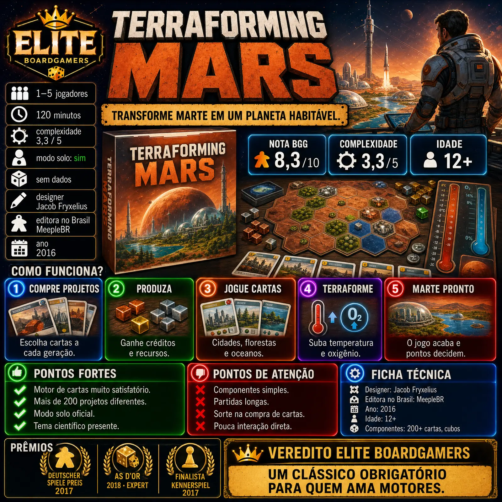

Em Terraforming Mars, cada jogador comanda uma corporação que disputa o crédito por esquentar, oxigenar e encher de oceanos o planeta vermelho. Venceu o Deutscher Spiele Preis e o As d'Or Expert, foi indicado ao Kennerspiel e ficou em 2º em três categorias do Golden Geek.

| Ano | 2016 |
|---|---|
| Autor | Jacob Fryxelius |
| Editora original | FryxGames |
| Jogadores | 1–5 |
| Duração anunciada | 120 min |
| Duração relatada | Uma resenha recomenda reservar pelo menos 3 horas |
| Nota Ludopedia | Não confirmado nas fontes consultadas |
| Complexidade Ludopedia | Não confirmado nas fontes consultadas |
| Edição nacional | Não confirmado nas fontes consultadas |
Notas e complexidade da Ludopedia obtidas por busca na web em 26/10/2026; o acesso direto ao site e ao BoardGameGeek foi bloqueado por proteção anti-robô, então confira os números atuais nas páginas. O que não foi encontrado aparece como não confirmado.
Cada jogador controla uma corporação e joga cartas de projeto, pagando com créditos e recursos que a própria produção gera a cada geração. Aos poucos, essas cartas montam um motor de produção cada vez mais eficiente.
Três parâmetros globais (temperatura, oxigênio e oceanos) avançam com as ações de todos. A partida termina quando os três chegam ao máximo. Vence quem somar mais pontos de terraformação, cartas, cidades, florestas, marcos e premiações.
Terraforming Mars: Ares Expedition e as expansões Prelude, Venus Next, Hellas & Elysium e Turmoil também estão na pauta.
A Ars Technica descreve o jogo como um quebra-cabeças denso e envolvente, com construção de motor e design de cartas elogiados.
Com centenas de cartas de projeto e corporações diferentes, cada partida segue um caminho diferente, ponto destacado em resenhas como a da IGN.
Os projetos têm nomes e efeitos de ciência plausível, e a Ars Technica destaca o tema como ponto forte.
A resenha da Nerdly conta que esperava algo bem mais pesado do que o jogo realmente é.
Arte irregular, cartas finas e cubos que descascam aparecem em várias críticas, incluindo Ars Technica, A Board's Eye View e Nerdly.
O tempo anunciado é de 2 horas, mas uma resenha recomenda reservar ao menos 3, especialmente com grupos cheios ou novatos.
Debates na Ludopedia citam a dependência das cartas que chegam à mão e o tempo parado enquanto os outros leem as cartas.
Uma análise recente na Ludopedia chama o jogo de clássico que talvez não seja para todos, pelo ritmo e pela leitura constante.
Terraforming Mars é um dos jogos de construção de motor mais premiados da década, com vitória no Deutscher Spiele Preis e no As d'Or Expert. O prazer de ver as cartas se encaixando compensa os componentes fracos para quem gosta do gênero. Reserve tempo: a promessa de 2 horas costuma virar 3.
Para quem quer passar a noite transformando um planeta, carta por carta.